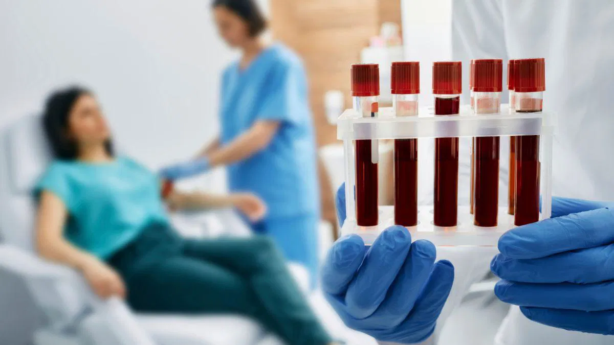

Galeri Visual Sel Darah
- Beranda
- Tentang Kami
- Layanan
- Galeri
- Kontak
Galeri
📁 Kategori Gambar:
- Sel Darah Normal: Eritrosit, leukosit, dan trombosit sehat di bawah mikroskop.
- Kelainan Darah: Gambar khas dari anemia, leukemia, sferositosis, dan lainnya.
- Pemeriksaan Laboratorium: Proses apus darah, pewarnaan, hingga pemeriksaan mikroskopis.
- Kegiatan Lab: Dokumentasi kegiatan lab sehari-hari dan pelatihan staf.
